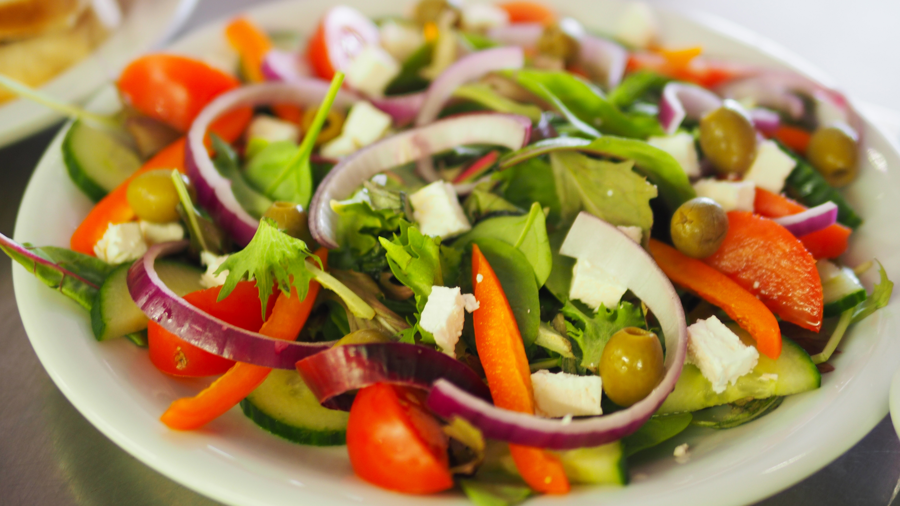

Welcome to JLino's Kitchen ™!
Providing the everyday home cook with videos and online tutorials on how to
prepare quick, healthy snacks and meals in 30 minutes or less.
About JLino
I'm a graphic designer, artist, and calligrapher. Cooking happens to be my second favorite thing to do.
I enjoy preparing meals for my family and friends. I'm originally from Edinburg, Texas. I moved to San Antonio in 2005.
Read more
Watch: How to made JLinos Guac
Easy Recipes
Avocado Tomato Salad

Prep Time: 10 minutes
Ingredients:
- 1 medium sized Avocado
- 1 Small Roma Tomato
- 1 flour tortilla
- 4 oz. corn
- 1/4 cup of Cilantro
- 1/2 lemon
- Salt & Pepper to taste
Fajita Tacos Plate

Prep Time: 30 minutes
Ingredients:
- 6 oz of Beef skirt (Beef Fajitas)
- 3 Corn Tortillas
- 1/4 cup of Cilantro
- 1/4 cup of white onions
- 1/4 cup of Cilantro
- 1/2 cup long grain rice
- 8 oz of Re-fried Beans
- 1 tsp of Garlic powder
- 1 tsp of Cumin
- 1 tbsp of Knorr chicken flavoring
- 1 lemon wedge
House Salad

Prep Time: 6 minutes
Ingredients:
- 2 cups Green Leaf Lettuce
- 1/2 Cup Spinach Leaf
- 1/2 Salad Tomato
- 1/2 of a small cucumber sliced
- 1/4 cup Red Bell Pepper
- 1 slice of Red Onion
- 1/4 cup of Cilantro
- 1/4 cup Green Olives
- 2 oz of Feta Cheese (cubed)
Helpful Articles on Health
Benefits of Apple Cider Vinegar
Because apple cider vinegar does contain acetic acid, it’s critically important to recognize that it should not be drunk on its own, but rather diluted... Read More
12 Best Vegetable To Juice
In recent years, juicing has gained widespread popularity among health-conscious individuals looking for a quick and convenient way to boost their nutrient intake... Read more
Organic Vs. Non-Organic
Organic foods have exploded in popularity over the last two decades. The popularity does not seem to be slowing down, as sales increased by more than 11% from 2014 to 2015 (1)... Read More
Which Oil is Best For Cooking?
When it comes to the performance and flavor, not all cooking oils are created equal. Some perform well at high temperatures, making them ideal for frying and sautéing...Read More